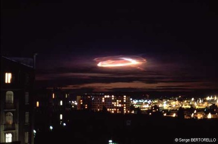

ou A Mayet, Sarthe, 2 t�moins sont au volant de leur voiture quand celle-ci s'arr�te et les phares
s'�teignent brutalement. Les t�moins observent alors une boule de feu �mettant une lumière rouge orang�e intense et
qui se d�place d'ouest en est. Apr�s avoir crois� la voiture, celle-ci se remet en marche toute seule. Les t�moins
sont tr�s choqu�s de cette m�saventure et se demandent s'ils n'ont pas r�v�. Suite � un article dans la presse
locale, une habitante du Mans contacte les t�moins pour leur expliquer qu'elle a �galement vu une boule de feu
orang�e dans la nuit du 2 au 3 mars vers qui a fortement affol� son chien et leur confirme qu'ils
n'ont pas r�v� SEPRA: PAN class� D.
� Firmi, Aveyron, 1 femme observe le passage en direction
du sol de 1 objet enflamm� suivi d'une tra�n�e dont la couleur passe du jaune au rouge avant de s'�teindre. Elle
entend 1 bruit sourd au moment suppos� de l'impact au sol. A l'endroit indiqu� suppos� de la chute, les gendarmes
n'ont rien trouv� Il s'agit vraisemblablement de la rentr�e atmosph�rique d'une m�t�oriteSEPRA: PAN class� B.
� Bonni�res-sur-Seine,
Yvelines ainsi que dans le Morbihan, plusieurs t�moins observent un ph�nom�ne lumineux de grande ampleur dans
les couches de nuages. Les couleurs observ�es sont tr�s vari�es, jaune, vert, rouge Ce ph�nom�ne est � rapprocher de l'�ruption solaire qui a eu lieu � la m�me �poque et qui a �t� relat�e par les m�dias. Il s'agit donc vraisemblablement d'un ph�nom�ne naturel spectaculaire de propagation lumineuseGEPAN: Cas class� B.
Clich� pris de l'horizon ouest de Marseille le 21, avec une pose de 8 s sur Fujichrome 100 et objectif
Pentax 1,4-50

� Marseille,
France, observation � l'horizon ouest d'un ph�nom�ne lumineux pendant plus de 1 h Il s'agirait d'une fus�e partie de Biscarosse ayant explos� dans la haute atmosphère. Le Centre d'Essai des Landes n'aurait pas voulu donner d'autre explicationNightlord: "19h30 le Mardi 21/03/89 sur l'horizon Ouest de Marseille", Une autre dimension, 28 mars 2007.